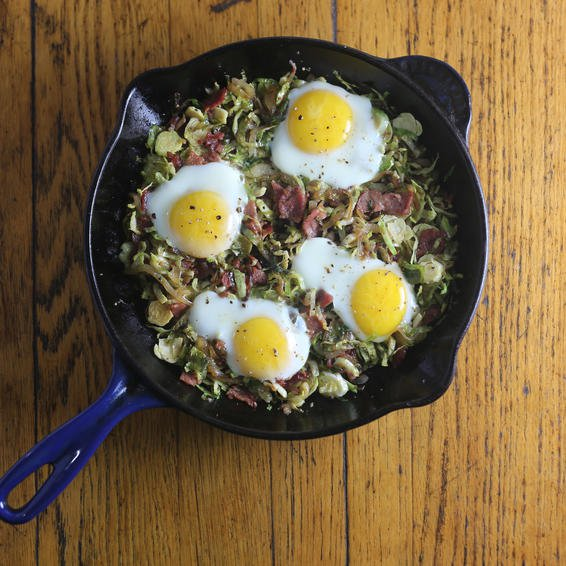

Easy Egg Recipes

Brussels Sprout Hash
Prep time
10 mins
Cook time
60 mins
Total time
1 hour 10 mins
SERVES: 4
Ingredients
8 slices turkey bacon, chopped
1 lg shallot, halved and thinly sliced
3 c shredded Brussels sprouts (about 12 oz untrimmed sprouts)
1 Tbsp cider vinegar
4 lg eggs
Directions:
1. PLACE turkey bacon in a large skillet over medium heat with 2 tsp olive oil. Cook, stirring, until browned, about 10 minutes. Remove bacon to a plate with a slotted spoon, leaving fat in pan.
2. ADD 1 tsp olive oil and shallot to pan. Sprinkle with salt and pepper and cook until lightly browned, about 5 minutes.
3. ADD Brussels sprouts, vinegar, and salt and pepper. Cook, stirring occasionally, until sprouts are lightly browned but retain a bit of crunch, about 8 minutes. Add bacon back in, stir again, and taste to check for seasoning.
4. CRACK eggs into the skillet, spacing them so they don’t touch, and sprinkle with salt and pepper. Cover skillet, turn heat to low, and cook until whites are cooked through but yolks are still runny, about 5 minutes.
Serve Hot. Enjoy!
NUTRITION
(per serving) 209 cal, 22 g pro, 11 g carbs, 3 g fiber, 3 g sugars, 10 g fat, 2 g sat fat, 781 mg sodium